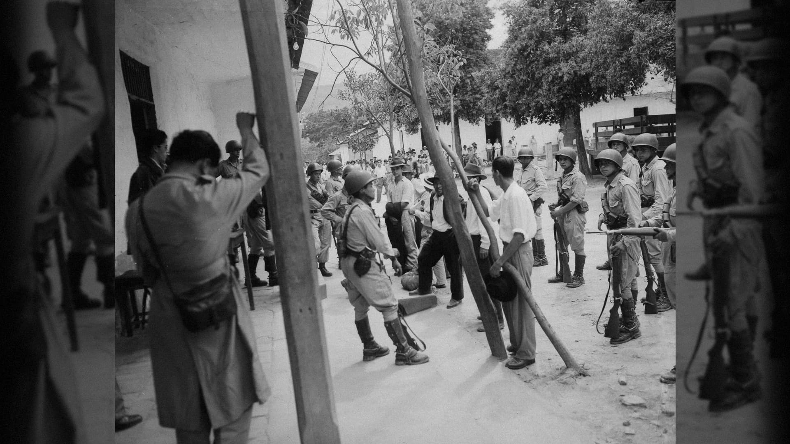
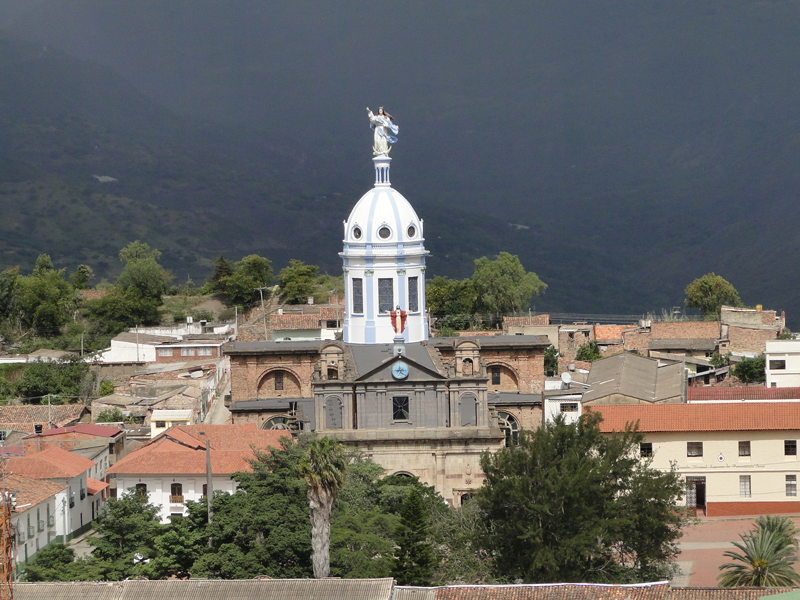
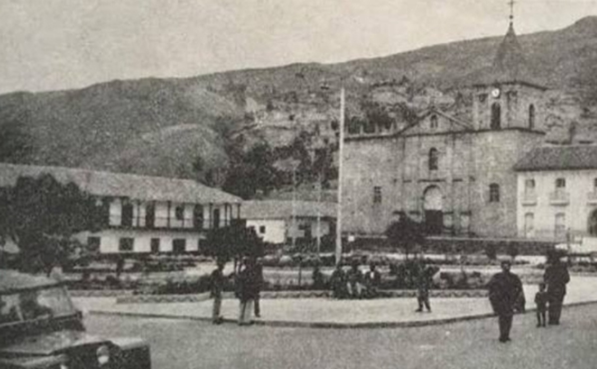
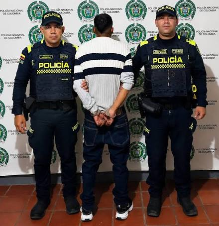

Hechos locales
Un caso ocurrido en 2020 en la Base Militar de Soatá, documentado por la Corte Constitucional.
ESTUDIO LOCAL
Hechos documentados, víctimas del conflicto armado y afectaciones en el municipio.
Sergio Esteban Sánchez Caro · Iván Darío Fonseca Bernal · Samuel Julián Orozco Rincón
Miguel Ángel Pérez Márquez · Elkin Julián Reyes Bustamante
Esta presentación se concentra en Soatá. No atribuye al municipio hechos ocurridos en otras localidades de Boyacá.
Un caso ocurrido en 2020 en la Base Militar de Soatá, documentado por la Corte Constitucional.
Registros municipales de víctimas del conflicto armado y de personas desplazadas que llegaron a Soatá.
Las cifras disponibles tienen fechas de corte y no permiten afirmar que todos los hechos ocurrieron dentro del municipio.
¿Qué hechos y afectaciones relacionados con la violencia están documentados para Soatá y qué muestran las fuentes disponibles?
Investigar la violencia en Soatá permite reconocer las afectaciones documentadas y comprender la importancia de conservar la memoria local.
Reconocer los antecedentes y hechos documentados ayuda a evitar que se olviden y a diferenciar la historia local de la regional.
Las cifras oficiales permiten dimensionar parte de la población afectada y recordar que detrás de cada registro hay personas y familias.
Consultar fuentes institucionales ayuda a presentar los datos con contexto, fechas de corte y límites, sin atribuir a Soatá hechos de otros municipios.
Este trabajo busca aportar a una comprensión respetuosa de la violencia y promover el interés por la memoria, los derechos humanos y la protección de la comunidad.
La meta que orienta el desarrollo de esta investigación.
Informar acerca de las manifestaciones de violencia histórica relacionadas con el conflicto armado, la violencia estructural y las barreras de protección social en Soatá, con el propósito de visibilizar sus impactos humanitarios y aportar a la reconstrucción de la memoria histórica del municipio.
Conocer qué situaciones están documentadas, qué afectaciones se han registrado y por qué es importante recordar y comprender la historia de Soatá.
Acciones concretas que permiten cumplir el objetivo general.
Identificar antecedentes históricos de violencia relacionados con Soatá y su contexto durante el periodo de violencia bipartidista.
Documentar hechos de violencia registrados en Soatá y situaciones que hayan afectado a su población, usando fuentes verificables.
Examinar el caso ocurrido en la Base Militar de Soatá en 2020, teniendo como referencia el Auto 1163 de 2021 de la Corte Constitucional.
Analizar las consecuencias humanitarias, los registros de víctimas y las necesidades de protección social que aparecen en las fuentes municipales e institucionales.
El documento de investigación del grupo menciona antecedentes de reclutamiento civil en Soatá durante el periodo de La Violencia (1948 en adelante).
El texto académico relaciona a Soatá con el reclutamiento de campesinos en el contexto de la violencia bipartidista y el surgimiento de los llamados Chulavitas.
Este antecedente aparece en el documento del grupo y se apoya allí en referencias históricas generales. Conviene presentarlo como contexto y no como un hecho municipal cuantificado.
Los ataques reportados en Sativanorte y La Uvita, y el sabotaje del Puente Pinzón, corresponden a otros puntos de la región; por eso no se presentan aquí como hechos ocurridos en Soatá.
La Corte Constitucional reconstruyó los hechos ocurridos el 6 de junio de 2020 en el Auto 1163 de 2021.
Durante una actividad de reacción se produjo una discusión entre un sargento y un soldado, que terminó en una confrontación física.
Según los antecedentes recogidos en el auto, el sargento habría disparado contra el soldado, quien fue atendido inicialmente en el Hospital San Antonio de Soatá y luego remitido a Bogotá.
La Fiscalía 20 Seccional de Soatá abrió una investigación por el presunto delito de homicidio tentado.
En diciembre de 2021, la Corte se declaró inhibida: consideró que no se cumplían los requisitos para resolver el conflicto entre jurisdicciones y remitió el expediente a la Fiscalía 20 Seccional de Soatá. No decidió la responsabilidad penal del investigado.
Datos del ASIS de Soatá 2021, con información del Registro Único de Víctimas.
Corte al 30 de junio de 2021
La cifra corresponde a personas registradas como víctimas en el ASIS municipal; no significa que todos los hechos victimizantes hayan ocurrido en Soatá ni en un mismo año.
El ASIS señala que el grupo de 10 a 14 años tenía el mayor número de registros entre los grupos de edad reportados para mujeres y hombres.
El ASIS municipal registró personas víctimas de desplazamiento que habían ingresado al municipio.
personas registradas como ingresadas a Soatá
Necesidad de alojamiento y estabilidad.
Acceso a salud, educación y atención.
Empleo, tierra y redes de apoyo.
Estas dimensiones deben investigarse; la cifra de desplazamiento no mide por sí sola la magnitud de cada impacto local.
Indicadores del ASIS municipal que ayudan a comprender el contexto de los hogares.
La informalidad y el desempleo describen vulnerabilidad económica, pero no demuestran que la violencia haya causado esos porcentajes. Tampoco son cifras actuales.
Es importante diferenciar la ausencia de reportes de la ausencia de hechos.
El ASIS no reportó casos en los indicadores municipales consultados para ese año; el mismo informe advierte que puede haber dificultades de notificación o denuncia.
El boletín de noviembre de 2025 incluye a Soatá entre los municipios destacados por tasa de violencia intrafamiliar. La síntesis consultada no aporta aquí el número exacto.
El boletín con corte al 31 de enero de 2025 registra 17 procesos PARD activos y 4 trámites extraprocesales en el Centro Zonal Soatá.
Los registros administrativos no representan todos los hechos ocurridos. Las cifras del ICBF describen trámites de protección, no el total de víctimas de violencia en el municipio.
Fotografías del municipio relacionadas con el contexto de la investigación.


Segunda selección de fotografías para complementar la exposición.


Existe un hecho local documentado en la Base Militar de Soatá, ocurrido en junio de 2020 y recogido en el Auto 1163 de 2021.
El ASIS registró 275 víctimas del conflicto armado y 219 personas desplazadas que ingresaron al municipio, con corte a junio de 2021.
Las cifras laborales y de población aportan contexto, pero no prueban por sí solas que la violencia haya causado esas condiciones.
Para conocer mejor la situación se necesitan registros actualizados y testimonios recogidos con respeto y consentimiento.
Hablar de Soatá exige distinguir los hechos locales de los ocurridos en otros municipios.
Selección bibliográfica que respalda los antecedentes, hechos y registros presentados.
Auto 1163 de 2021 (Expediente CJU-281). [M.P. Cristina Pardo Schlesinger].
corteconstitucional.gov.co ↗Boletín estadístico Dirección de Protección Regional Boyacá: Corte al 31 de enero de 2025.
icbf.gov.co ↗Conflicto armado en Boyacá: 2005-2018: Una guerra invisible, permanente y silenciosa (1.ª ed.). Editorial UPTC.
doi.org/10.19053/uptc ↗Bandolerismo político en Boyacá (Colombia), 1930-1953. Revista Virajes, 16(2), 229-253.
doi.org/10.17151/vit ↗Hay futuro si hay verdad: Legado de la Comisión para el Esclarecimiento de la Verdad, la Convivencia y la No Repetición.
comisiondelaverdad.co ↗Soatá, señora de los silencios: Memoria histórica de los 450 años del municipio. Portal Histórico de Soatá.
gustavopaezescobar.com ↗